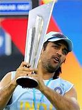
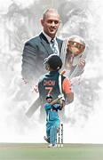

Career Highlights

2011 World Cup
Led India to victory with an iconic winning six.

2007 T20 World Cup
Won the inaugural T20 World Cup in South Africa.

2013 Champions Trophy
First captain to win all three ICC trophies.